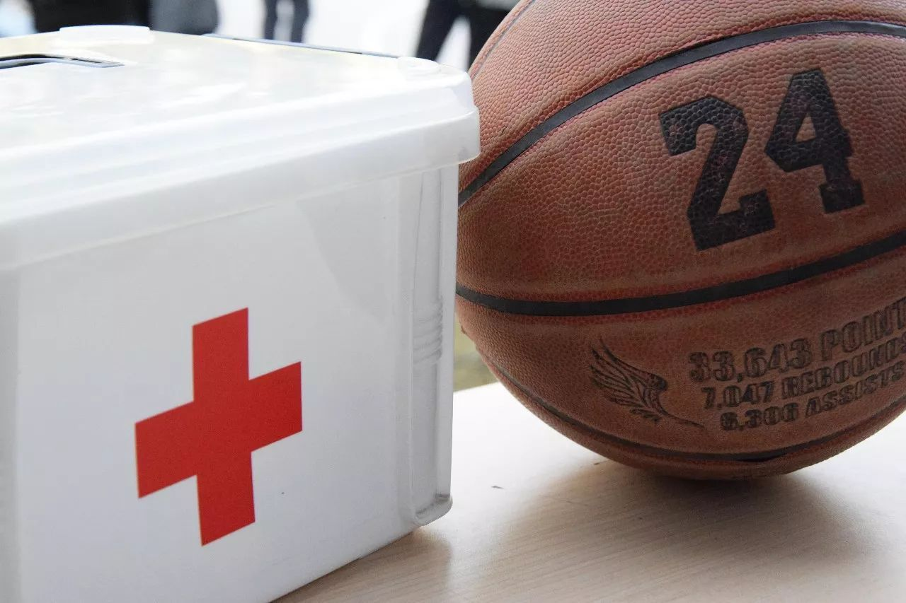
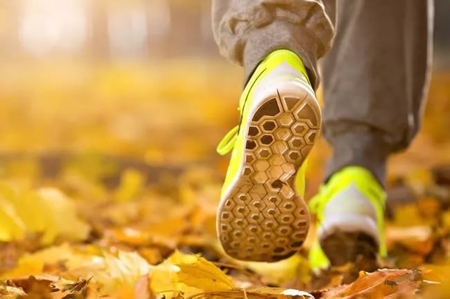
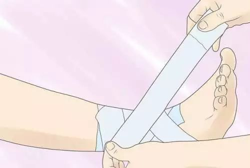
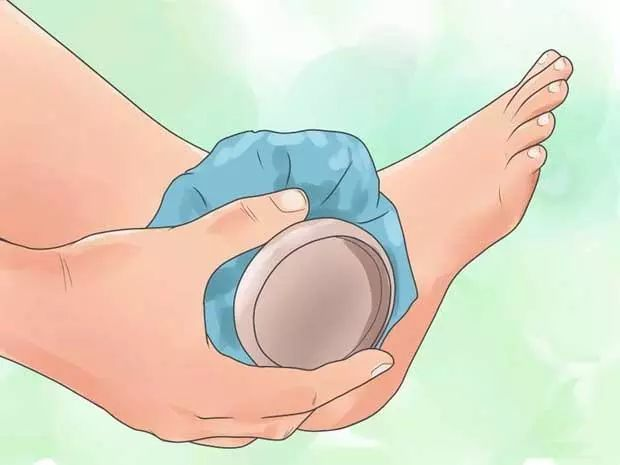
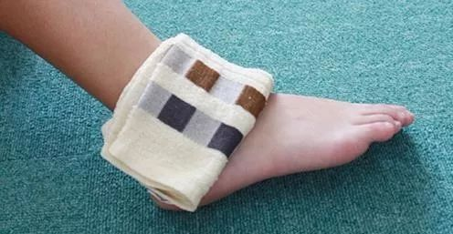

噔噔噔！新生篮球赛正在如火如荼地进行中，在篮球场上经常会出现一些意外伤情，有时候一个推搡或者不慎的摔跤都会给大家带来伤害，今天阿文就要教给大家一些篮球场上常用的急救处理方法以及一些注意事项，大家在运动的过程中要随时注意自己的安全哦。

啊文篮球 篮球护具购买。
一：赛前热身
先慢跑给身体预热

啊文建议大家剧烈运动前可以先热身使身体微微出汗，因为肌肉具有黏滞性的物理特性，慢跑到微微出汗能够使机体温度升高，降低肌肉的黏滞性。在运动前器官还存在惰性，慢跑能够调动器官的积极性，使机体快速投入到运动状态。 2.运动后拉伸身体 跑步之后，肌肉还呈现着维持跑步姿势的紧张状态。拉伸可以缓解肌肉紧张，将肌纤维拉长，增加肌肉的延展性。可以减少在接下来的运动中出现损伤问题，进一步保护机体。 其次进行关节活动。关节活动时，要先从小关节开始，先动用身体的一小部分运动单位，循序渐进，慢慢扩展到大关节及全身，这样既能使拉伸效果更好，又能减少机体损伤。 3.专项性练习 肌肉作用存在着一个最佳长度，在最佳长度能产生最大的收缩力量，又不容易发生损伤。在进行上一环节的拉伸之后，肌肉已经拉伸到几乎为最大长度，这时并不利于立马投入比赛。只有在进行专项性练习之后，使肌肉恢复到最佳长度，才能更好地发挥出机体的运动能力及水平，减少机体损伤。 二： 扭伤处理 扭伤是指四肢关节或躯体部位的软组织（如肌肉、肌腱、韧带等）损伤，而无骨折、脱臼、皮肉破损等。
症状一般有皮肤肿胀、淤血、擦伤，扭伤肌肉后疼痛并无法运动到位，关节活动不利或不能。
阿文建议大家在扭伤之后的48小时内均采取冰敷的办法，以达到减少和停止出血和软组织渗出并且减轻疼痛的目的。冰敷最好的方法是利用冰袋，如果没有冰袋可以用冷饮代替，但要拿毛巾包裹，以防冻伤。每次冷敷不要超过20分钟，防止皮肤细胞冻伤致死。在冰敷了2天之后，扭伤部位没那么红肿，说明已经完全止住出血了。这时开始用温热的东西来敷扭伤处，可以选用煮鸡蛋剥壳后用薄毛巾包裹来敷，也可以用红花油、活络油等跌打油轻揉扭伤的地方，以达到活血祛瘀的作用，促进淤血吸收，并且温热能减轻疼痛。

三：骨折处理
当大家在打篮球或者进行其他运动时，有很大的可能会在运动过程中导致骨折，首先大家在受伤后要先判断，骨折的主要依据有：